測量学 / 第5回 導入
トラバース測量 I
測量学 第5回｜角と距離をつないで、点の位置を求める
角をつないで、
座標へ進む。
観測角 β → 方向角 T
距離 S → 座標差 ΔX・ΔY
90分 / 講義60分・演習25分・まとめ5分
要点
田の周りの「道順」を、座標へ変えよう。
トラバース測量 I · 改3
01 / 44
測量学 / 第5回 導入
今日できるようになること
測った角から座標まで、行きと帰りの計算をつなぐ。
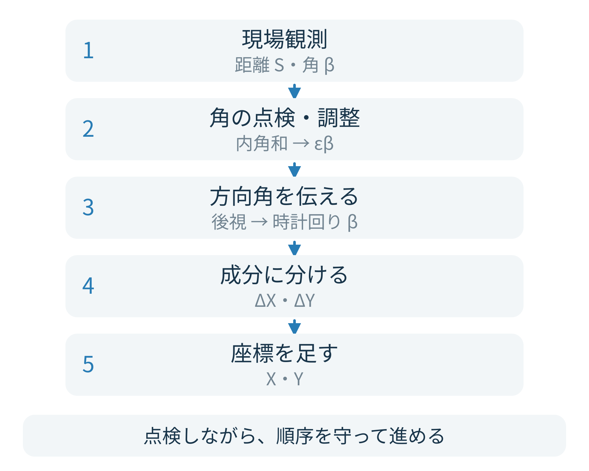
内角の和を点検し、許容内の角閉合差を等
配分する
調整角から方向角、方向角と距離から座標
差を出す
2点の座標から、距離と方向角を逆算する
要点
計算の前に「何を求める段か」を言える。
トラバース測量 I · 改3
02 / 44
測量学 / 第5回 導入
第4回：採用した角を、次の向きへ
前回は「どの角を使うか」。今日は「使う角で何を求めるか」。
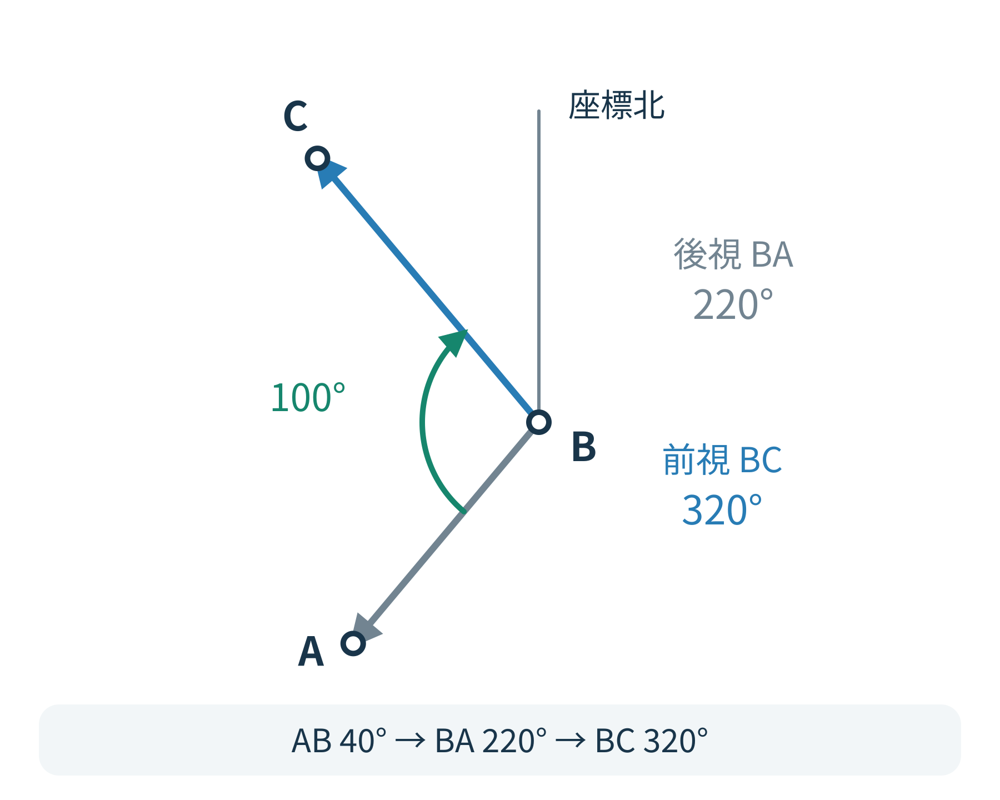
正反の結果と点検から、採用する角を決め
た
次の測点では、来た方向を振り返って後視
する
後視から前視への角を、北からの方向角へ
変える
要点
Bに移ったら、出発方向ABをそのまま足さない。
トラバース測量 I · 改3
03 / 44
測量学 / 第5回 導入
農地と水路で、位置の骨格をつくる
測点の座標が、区画・路線・面積を考える土台になる。
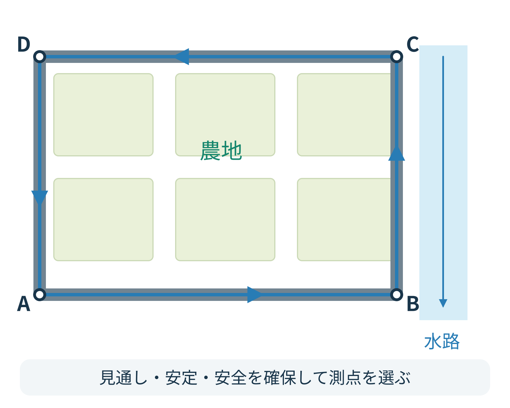
圃場：区画を囲み、隅の杭や面積の基準を
つくる
水路・農道：路線に沿って測点をつなぐ
ため池：周辺の基準点から位置を管理する
要点
見える点を順につなぎ、必要な場所へ座標を運ぶ。
トラバース測量 I · 改3
04 / 44
測量学 / 第5回 トラバースの基本
トラバースとは、点を順につなぐ測量
測点を折れ線で結び、各点の角と各辺の距離を測る。
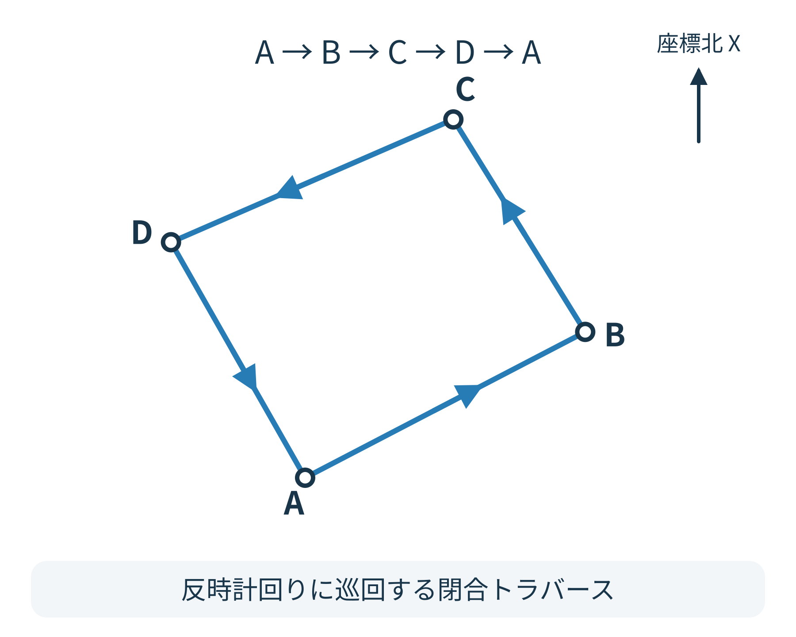
角：一つ前の点から、次の点までどう回る
か
距離：次の点まで、何m進むか
出発点の座標と最初の向きから、点の位置
をたどる
要点
「どこから・どちらへ・何m」を繰り返す。
トラバース測量 I · 改3
05 / 44
測量学 / 第5回 トラバースの基本
閉合・結合・開放は、終わり方が違う
終わったとき、既知の値と比べられるかを考える。
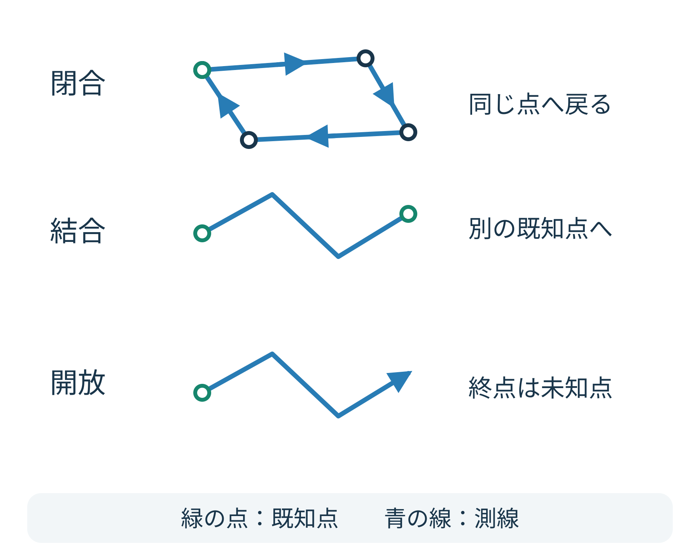
閉合：出発点へ戻る。内角和と座標の戻り
を点検
結合：既知終点へ。方向の点検には既知方
向も必要
開放：未知点で終わる。終点での閉合点検
がない
要点
点検する「答え合わせの相手」を確保する。
トラバース測量 I · 改3
06 / 44
測量学 / 第5回 トラバースの基本
選点と観測で、計算の土台を整える
よい計算は、見通し・安定した点・確かな記録から。
隣の測点が見え、杭を保存できる場所を選
ぶ
極端な短辺を避け、安全に据付・視準でき
るか確認
点名・後視・前視・角・距離を、その場で
記録する
要点
あとから補正する前に、現場で誤りを減らす。
トラバース測量 I · 改3
07 / 44
測量学 / 第5回 計算の全体像
計算の全体地図：角から座標へ
一度に全部を解かず、一つ前の結果を次へ渡す。
現場観測 → 角を点検・調整 → 方向角を求め
る
距離を北・東の成分へ → 座標に足す
逆計算は、座標から向きと距離へ戻る
要点
角 → 向き → 成分 → 座標。今いる段を確認する。
トラバース測量 I · 改3
08 / 44
測量学 / 第5回 方向の約束
座標軸と方向角：Xは北、Yは東
方向角Tは、座標北から時計回りに測る。
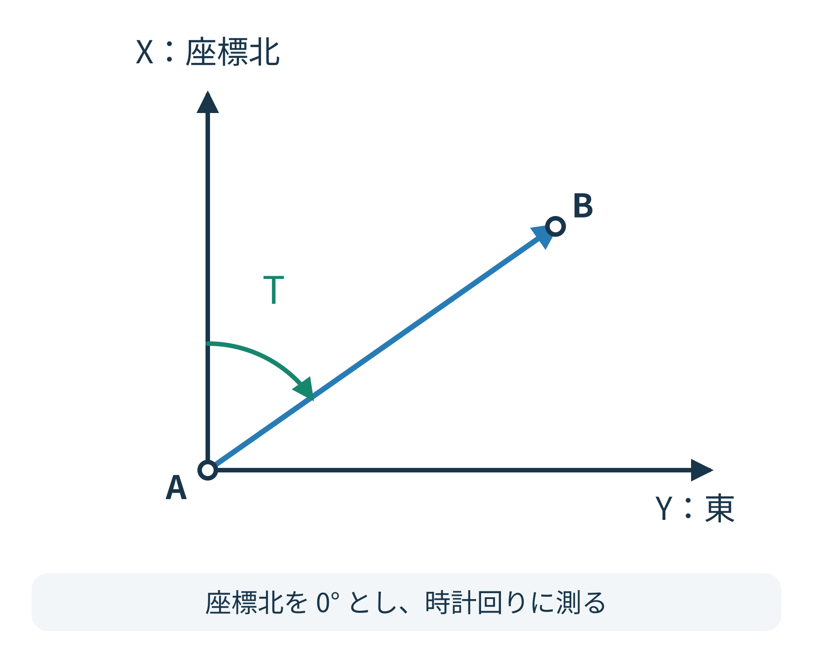
北 0°／東 90°／南 180°／西 270°
角Tは北を共通の基準にする「辺の向き」
数学の角度の約束と区別する
要点
図の上に「X・北」、右に「Y・東」を書く。
トラバース測量 I · 改3
09 / 44
測量学 / 第5回 方向の約束
度分秒を直し、電卓はDEGにする
角度の「分・秒」は60進。62°30′は62.30°ではない。
1°＝60′、1′＝60″。60になったら繰り上げる
三角関数には、度分秒機能か十進の度で入力
DEG表示を確認。RADのまま計算しない
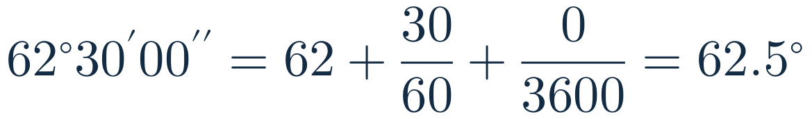
要点
角の単位と電卓のモードを、計算の前に確かめる。
トラバース測量 I · 改3
10 / 44
測量学 / 第5回 方向の約束
後視は、進んできた向きを180°反転
BからAを見る向きは、AからBへ進んだ向きの逆。
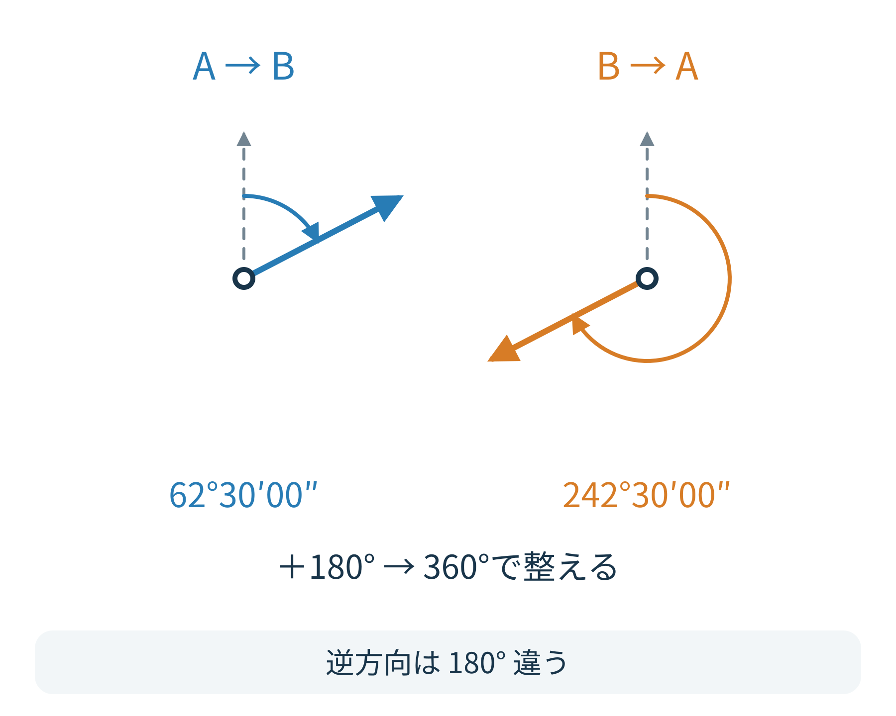
前の辺ABを進み、BでAを振り返る
180°を足し、360°以上なら一周分を引く
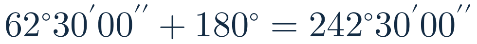
要点
「次へ曲がる」前に、まず後ろを見る。
トラバース測量 I · 改3
11 / 44
測量学 / 第5回 方向の約束
観測角βは、後視から前視へ時計回り
βの出発線は「北」ではなく、その点から見た後視線。
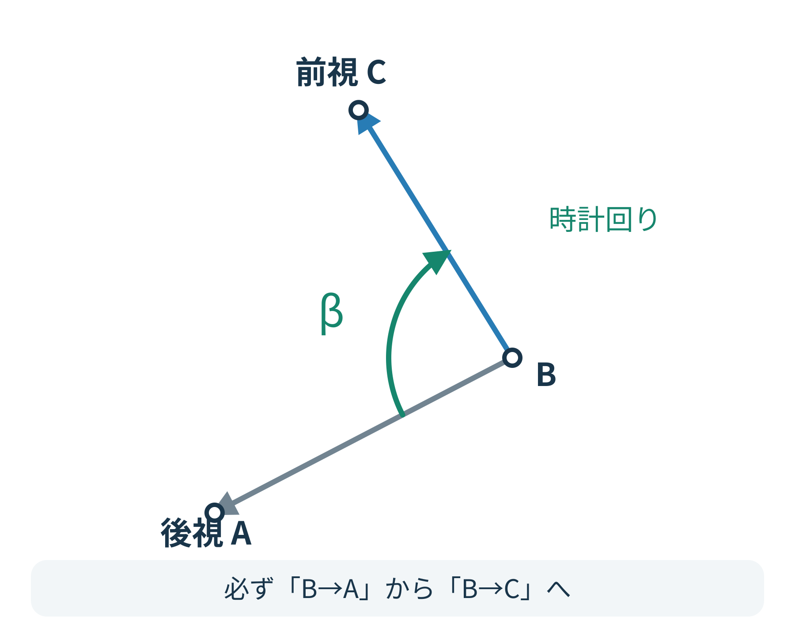
Bに立つ：後視A → 前視Cへ時計回り
βは2本の視線の間、Tは北と1本の辺の間
矢印を描き、どちらの角か確かめる
要点
Tとβは、角を測り始める基準線が違う。
トラバース測量 I · 改3
12 / 44
測量学 / 第5回 方向の約束
内角と観測角は、いつも同じではない
今回の反時計回りループでは、時計回りのβが内角になる。
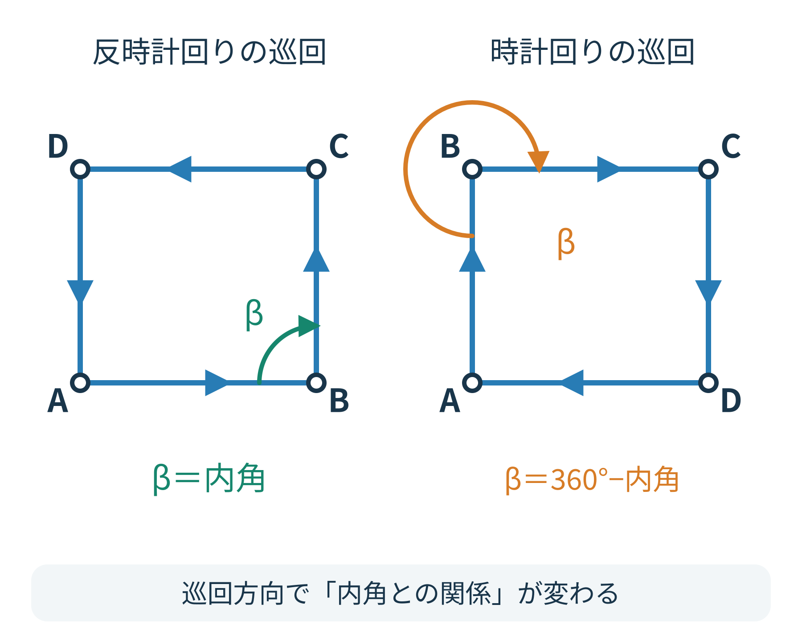
A → B → C → D → Aを反時計回りにたどる
各点で、後視から前視への時計回り弧を確
認
逆向きにたどれば、同じ2本の線でもβが変
わる
要点
内角を使える理由を、進行方向と回る弧で確かめる。
トラバース測量 I · 改3
13 / 44
測量学 / 第5回 共通例題
共通例題：4点を反時計回りに一周
出発点Aの仮座標は (1000.000, 1000.000) m。

内角と距離は学習用の合成データ
| 測点 | 観測内角β | 次の辺 | S (m) |
| A | 92°10′20″ | AB | 120.000 |
| B | 85°40′30″ | BC | 95.000 |
| C | 98°20′10″ | CD | 117.015 |
| D | 83°49′40″ | DA | 102.977 |
要点
同じ4点を、角・方向角・成分・座標で使い続ける。
トラバース測量 I · 改3
14 / 44
測量学 / 第5回 角を点検・調整
内角の和は、三角形に分けて点検
四角形は三角形2個。内角の和は360°になるはず。
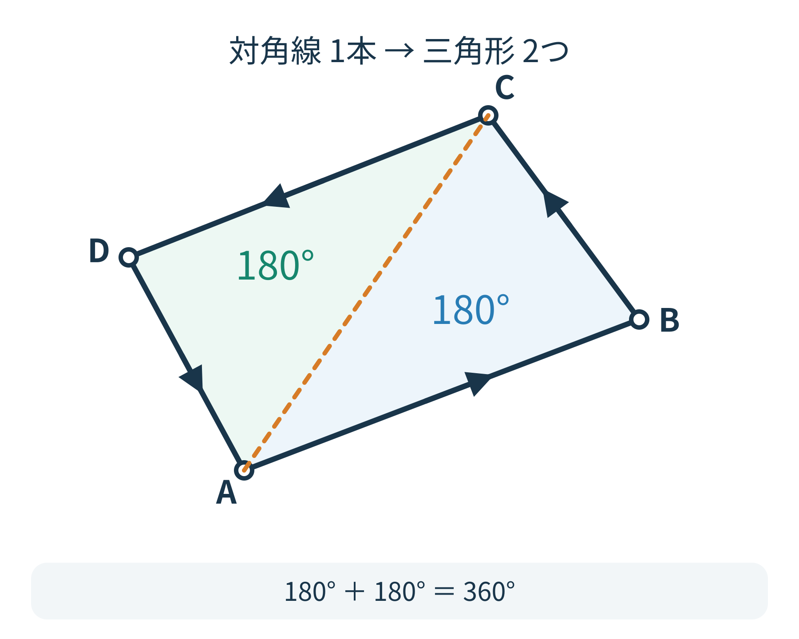
対角線で分けると、四角形は三角形2個
nは辺の本数と同じ、内角を観測した測点の
数
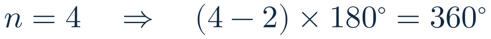
要点
点検には、観測値と比べる理論値が必要。
トラバース測量 I · 改3
15 / 44
測量学 / 第5回 角を点検・調整
角閉合差を求め、許容と比べる
観測和は360°00′40″。理論値より40″大きい。
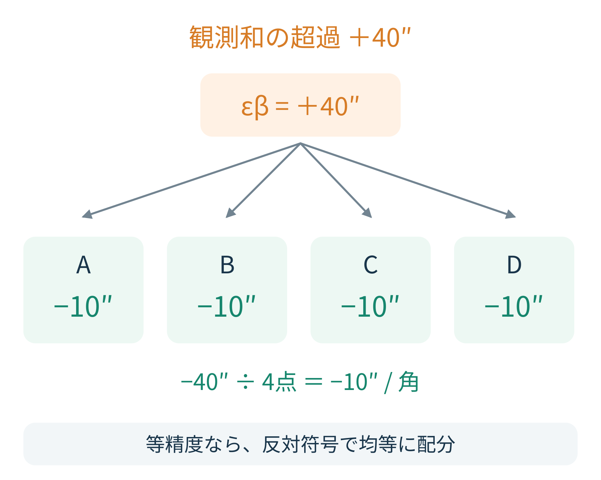
授業用仮定：4点の角閉合差の許容値は40″
今回は |εβ| ≦ 40″ なので調整へ進む
授業の仮定。超過時は原因確認・再測
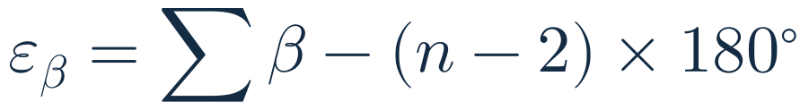
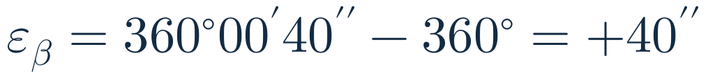
要点
補正の前に許容判定。大きな誤りを配って隠さない。
トラバース測量 I · 改3
16 / 44
測量学 / 第5回 角を点検・調整
等精度の角なら、閉合差を等配分
和が40″多いので、4角から10″ずつ引く。
仮定：4つの角は同じ精度で観測されている
観測和が大きい → 補正はマイナス
調整後の内角和が360°になることを再確認
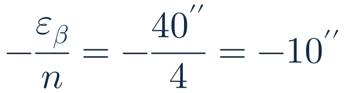
要点
角閉合差の符号と、配る補正の符号は逆。
トラバース測量 I · 改3
17 / 44
測量学 / 第5回 角を点検・調整
調整角の一覧：この値を次へ渡す
各角に−10″。調整後の和は360°00′00″。
次の方向角計算には、右端の調整角を使う
| 測点 | 観測内角β | 補正 | 調整角β |
| A | 92°10′20″ | −10″ | 92°10′10″ |
| B | 85°40′30″ | −10″ | 85°40′20″ |
| C | 98°20′10″ | −10″ | 98°20′00″ |
| D | 83°49′40″ | −10″ | 83°49′30″ |
| 合計 | 360°00′40″ | −40″ | 360°00′00″ |
要点
観測値を保存し、調整値を別の列に記録する。
トラバース測量 I · 改3
18 / 44
測量学 / 第5回 方向角
方向角は「反転 → 観測角 → 整える」
Bに立ち、来た方向を振り返ってからCへ向く。
① 前の方向角を180°反転して後視方向へ
② 後視から右回りに調整角βを加える
③ 360°の整数倍を除いて範囲を整える
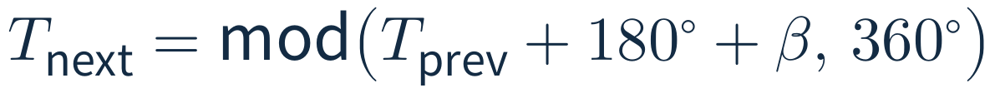
要点
観測角βは、後視から前視への時計回りの角。
トラバース測量 I · 改3
19 / 44
測量学 / 第5回 方向角
BからCの方向角を求める
既知のABから、Bの調整角85°40′20″を使う。
後視BA：62°30′00″＋180°＝242°30′00″
BAから右へ85°40′20″回ると北西を向く
要点
BCの計算に使う角は、器械を置いたBのβ。
トラバース測量 I · 改3
20 / 44
測量学 / 第5回 方向角
一周して既知の方向へ戻るか
C、D、Aでも同じ3手を繰り返す。
最後はAの調整角を使い、既知のABと照合する
| 測線 | 方向角T |
| AB（既知） | 62°30′00″ |
| BC | 328°10′20″ |
| CD | 246°30′20″ |
| DA | 150°19′50″ |
| AB（一周後） | 62°30′00″ |
要点
方向角の戻りは計算点検。座標の閉合は別の点検。
トラバース測量 I · 改3
21 / 44
測量学 / 第5回 方向角
偏角なら「進行方向からの曲がり」
同じ方向角を、符号付きの曲がり角でも追える。
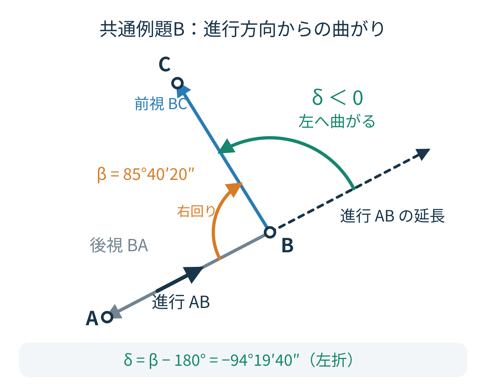
この例では左へ曲がるため、偏角は負
Bの偏角は−94°19′40″、一周の和は−360°
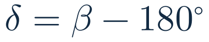
要点
交角法と偏角法は、同じ向きを別の出発線から測る。
トラバース測量 I · 改3
22 / 44
測量学 / 第5回 緯距・経距
斜めの距離を北と東の2成分へ
方向角と距離が分かれば、座標の増減が分かる。
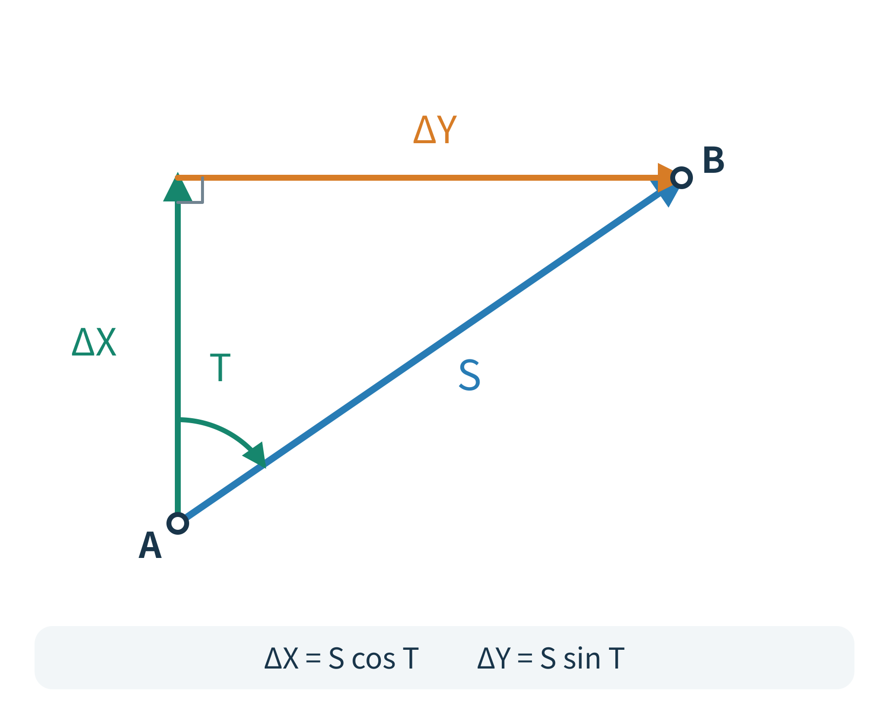
緯距ΔX：北へ進む成分
経距ΔY：東へ進む成分
Tは北から測るため、Xにcos、Yにsin
要点
距離Sを、北向き成分と東向き成分に分ける。
トラバース測量 I · 改3
23 / 44
測量学 / 第5回 緯距・経距
象限を言えば成分の符号が決まる
計算前に「北東・南東・南西・北西」を言う。
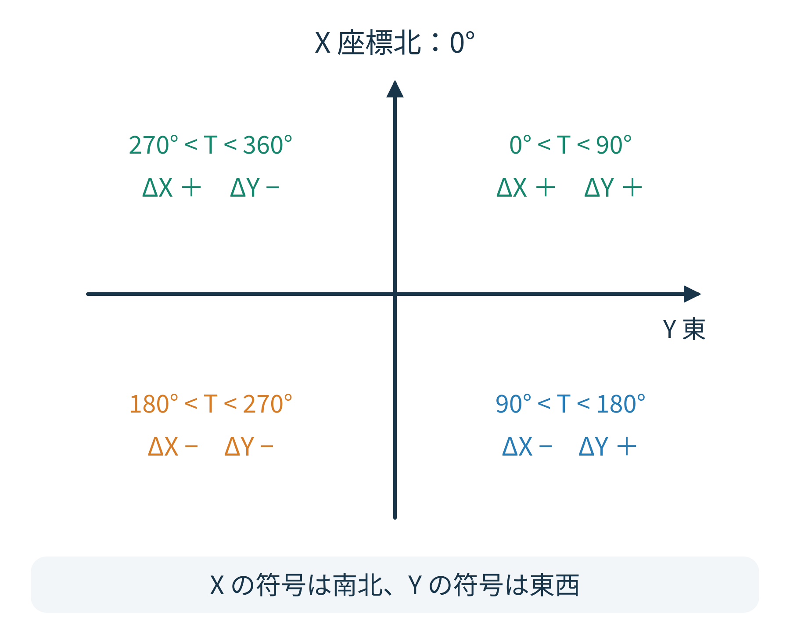
北東：ΔX＋、ΔY＋ ／ 南東：ΔX−、ΔY＋
南西：ΔX−、ΔY− ／ 北西：ΔX＋、ΔY−
軸上は片方が0。T＝270°なら真西へ進む
要点
方向の見取りと計算の符号を、必ず照合する。
トラバース測量 I · 改3
24 / 44
測量学 / 第5回 緯距・経距
ABは北へ55.410 m、東へ106.441 m
ABの120.000 mを、2つの座標差へ変える。
T＝62°30′00″＝62.5°、電卓はDEG
北東なので、緯距も経距も正になる
要点
表示は0.001 m、次の計算には丸め前の値を使う。
トラバース測量 I · 改3
25 / 44
測量学 / 第5回 緯距・経距
全辺の成分をそろえる
距離はほぼ閉じるよう設計した合成データ。
各辺で、方向と成分の符号を照合する
合計や閉合差は、丸め前の成分から計算する
| 辺 | S（m） | T | ΔX（m） | ΔY（m） |
| AB | 120.000 | 62°30′00″ | +55.410 | +106.441 |
| BC | 95.000 | 328°10′20″ | +80.716 | −50.100 |
| CD | 117.015 | 246°30′20″ | −46.649 | −107.314 |
| DA | 102.977 | 150°19′50″ | −89.476 | +50.973 |
要点
小さな閉じ残りは教材設計の結果で、精度の実証ではない。
トラバース測量 I · 改3
26 / 44
測量学 / 第5回 座標計算
座標は成分を順に足して求める
Aの仮座標を出発点に、B、C、Dへ進む。
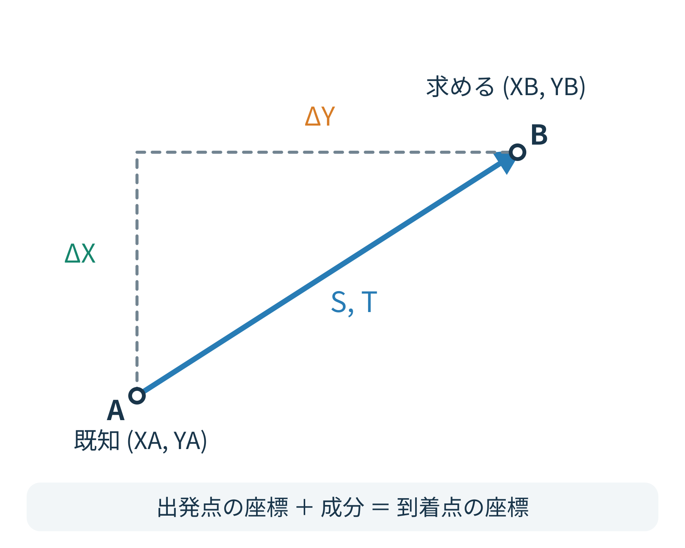
ここでの座標は、座標閉合差を補正する前の値
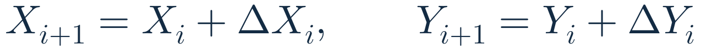
| 点 | X（m） | Y（m） |
| A（始点） | 1000.000 | 1000.000 |
| B | 1055.410 | 1106.441 |
| C | 1136.125 | 1056.341 |
| D | 1089.476 | 949.027 |
| A′（戻り） | 1000.000 | 1000.000 |
要点
座標を足す前に、方向角と成分を確かめる。
トラバース測量 I · 改3
27 / 44
測量学 / 第5回 逆計算
逆計算は「終点 − 始点」から
2点の座標があれば、距離と向きへ戻れる。
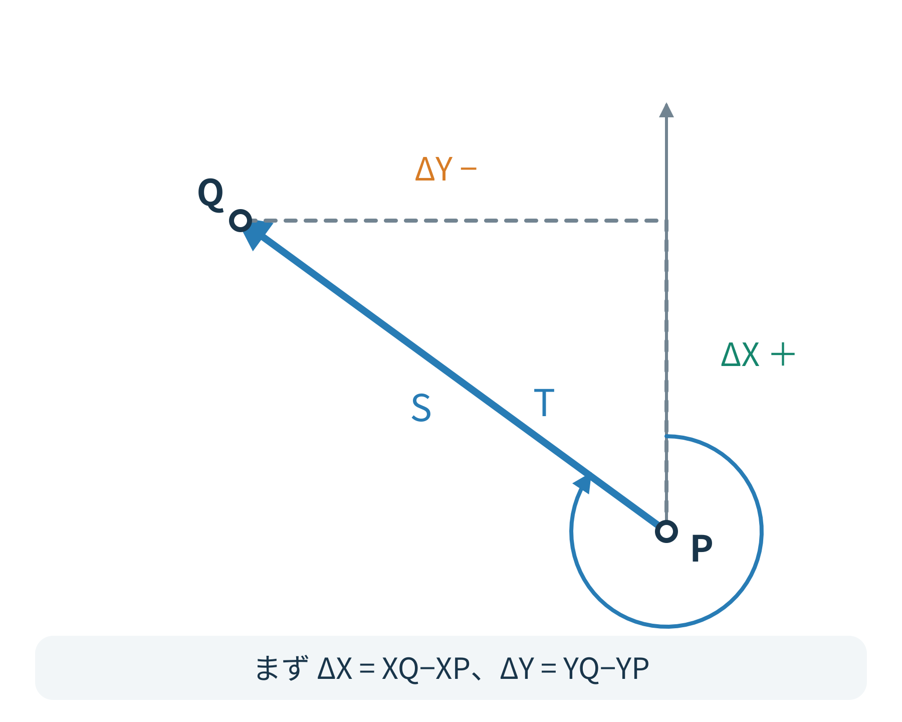
順計算：方向角と距離 → 座標差 → 座標
逆計算：座標 → 座標差 → 距離と方向角
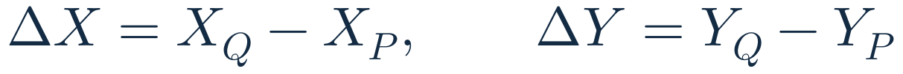
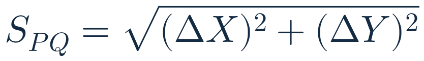
要点
P→Qを求めるなら、必ずQの座標からPを引く。
トラバース測量 I · 改3
28 / 44
測量学 / 第5回 逆計算
同じtanでも、向きは180°違う
arctanの値に、座標差の象限を組み合わせる。
α＝arctan(ΔY／ΔX)をDEGで求める
ΔX＝0は東90°・西270°。同一点は方向未定義
下表はarctan用。atan2は象限を判定済み
| ΔX | ΔY | arctanからTへ |
| ＋ | ＋ | α |
| − | ＋ | α＋180° |
| − | − | α＋180° |
| ＋ | − | α＋360° |
要点
電卓のarctanだけで答えず、象限で向きを確認する。
トラバース測量 I · 改3
29 / 44
測量学 / 第5回 TSとの接続
TSも「後視 → 向き → 成分 → 座標」
座標観測モードは、今日の計算を器械内で行う。
入力：器械点座標・後視方向・角・距離
出力：観測点の座標
別の既知点で点検し、後視入力の誤りを見
つける
要点
後視方向を誤ると、求める点群が器械点の周りに回る。
トラバース測量 I · 改3
30 / 44
測量学 / 第5回 演習
25分の演習：手順を自分でつなぐ
関数電卓を使い、途中式と符号を残す。
問1：15分 角の調整 → 方向角 → 成分
問2：7分 座標差 → 距離 → 方向角
最後の3分：戻り・符号・単位を検算する
| 問題 | 内容 | 配点 |
| 1 | 5点閉合トラバース | 6点 |
| 2 | 2点の座標から逆計算 | 4点 |
要点
角は1″、距離は0.001 mで表示。途中は丸めない。
トラバース測量 I · 改3
31 / 44
測量学 / 第5回 演習
問1：5点でも、手順は同じ
既知T_AB＝115°20′30″、角の許容値は80″。
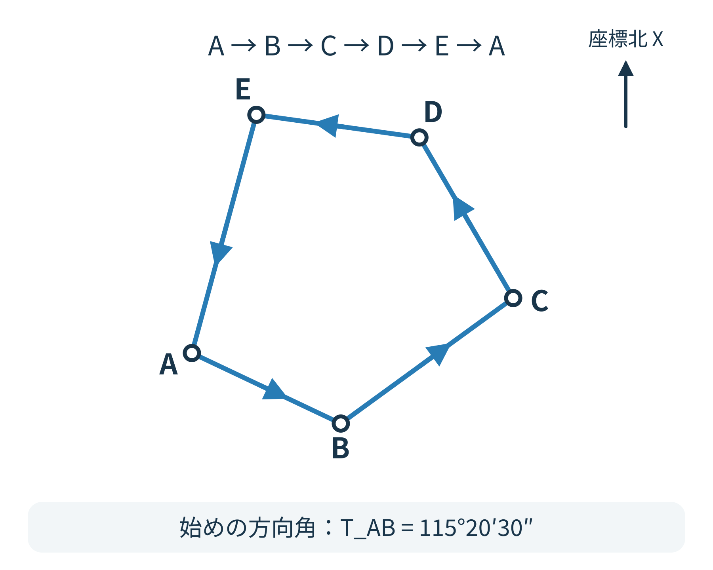
同精度の角を仮定。許容値80″は授業用条件
成分はBC・CD・EAを埋め、5辺の合計を求める
| 点 | 観測内角β | 辺 | S（m） |
| A | 100°12′12″ | AB | 85.000 |
| B | 118°35′52″ | BC | 110.000 |
| C | 95°48′32″ | CD | 96.000 |
| D | 128°10′42″ | DE | 84.894 |
| E | 97°13′42″ | EA | 127.412 |
要点
内角和 → 許容判定 → 等配分 → 方向角 → 成分。
トラバース測量 I · 改3
32 / 44
測量学 / 第5回 演習
問2：PからQを見る向きを求める
器械点Pから既知点Qへの、後視方向を計算する。
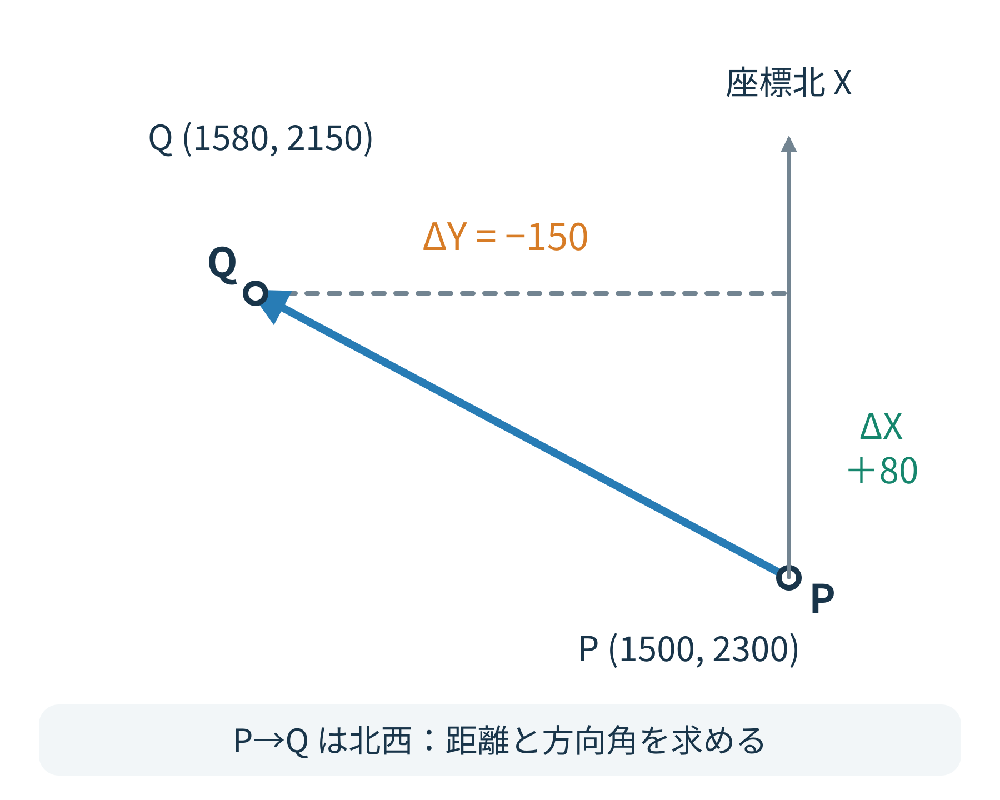
① 終点−始点で成分を求め、向きを言う
② 距離、arctanの値、加える角を書く
③ T_PQを整え、反方向角T_QPも求める
| 点 | X（m） | Y（m） |
| P | 1500.000 | 2300.000 |
| Q | 1580.000 | 2150.000 |
要点
図の向きと、計算した方向角の象限を照合する。
トラバース測量 I · 改3
33 / 44
測量学 / 第5回 計算点検
誤りは「定義に戻る」と見つかる
答えの桁より先に、向き・単位・観測点を確認する。
| 起きたこと | 確かめること | 戻る手順 |
| 方向角が180°違う | 後視への反転をしたか | 反転 → β → mod |
| 成分の符号が逆 | Xは北、Yは東か | 図で進む向きを言う |
| 三角関数が合わない | DEGか、度分秒の入力か | 62°30′＝62.5° |
| 逆方向を求めていた | 終点と始点はどちらか | 終点 − 始点 |
要点
見取り図・式・電卓の値を、3つで照合する。
トラバース測量 I · 改3
34 / 44
測量学 / 第5回 まとめ
出口問題：計算の向きを説明できるか
提出前に、式の意味を自分の言葉で確かめる。
① 交角から方向角へ変える3手は？
② T＝270°、S＝100 mのΔX・ΔYは？
③ 同じ2点を逆向きに見ると、何が変わる？
要点
角 → 向き → 成分。逆計算は座標差から戻る。
トラバース測量 I · 改3
35 / 44
測量学 / 第5回 次回
次回は「閉じ残り」から座標を確定する
今日の成分表を使い、点検と補正へ進む。
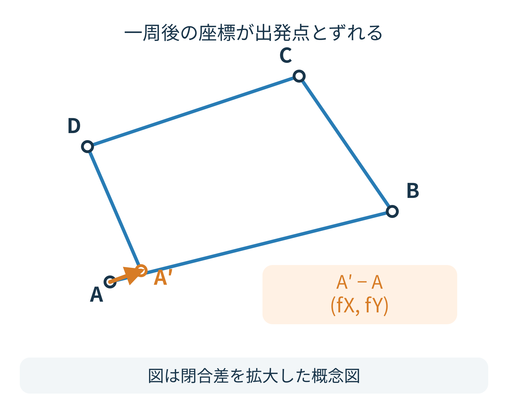
閉じ残りを2成分で求め、路線長と比較する
許容内を確認してから、成分の補正を配る
補正後の成分を足し、座標を確定する
要点
閉合比・Bowditchは第6回の主題。付録で先取り。
トラバース測量 I · 改3
36 / 44
補足 / 教員用 付録・演習解答
問1解答：角の調整と方向角
観測和540°01′00″、εβ＝＋60″、各角−12″。
＋60″は授業条件80″以内。調整後の和は540°
一周後のABは115°20′30″に戻る
| 点 | 調整角β | 辺 | 方向角T |
| A | 100°12′00″ | AB | 115°20′30″ |
| B | 118°35′40″ | BC | 53°56′10″ |
| C | 95°48′20″ | CD | 329°44′30″ |
| D | 128°10′30″ | DE | 277°55′00″ |
| E | 97°13′30″ | EA | 195°08′30″ |
要点
誤差と逆符号で等配分し、方向角の一周で検算する。
トラバース測量 I · 改3
37 / 44
補足 / 教員用 付録・演習解答
問2解答：北西へ170.000 m
座標差はΔX＝＋80.000 m、ΔY＝−150.000 m。
α＝arctan(−150／80)＝−61°55′39″
北西なので360°を加える
反方向角T_QP＝118°04′21″
要点
符号から北西を判断し、方向角298°の位置と照合する。
トラバース測量 I · 改3
38 / 44
補足 / 教員用 付録・結合トラバース
結合では既知の終方向と比べる
内角和の代わりに、伝播した方向角を点検する。
始点と終点に、独立に既知の方向を用意する
終方向の差は0°境界をまたぐ場合も整える
この例の方向閉合差＋30″を、3角へ各−10″
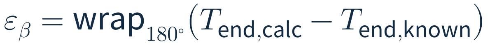
| 比較する方向 | 方向角 |
| 始方向（既知） | 40°00′00″ |
| 終方向（計算） | 51°01′00″ |
| 終方向（既知） | 51°00′30″ |
要点
結合では「既知の終方向」が角の点検先になる。
トラバース測量 I · 改3
39 / 44
補足 / 教員用 付録・次回の先取り
座標閉合差と閉合比
閉合比は、路線長に対する閉じ残りの割合。
P＝ΣS、eは閉合差ベクトルの長さ
閉合比r＝e／Pは小さいほどよい
教材の極小値は距離設計の結果。精度の実
証ではない
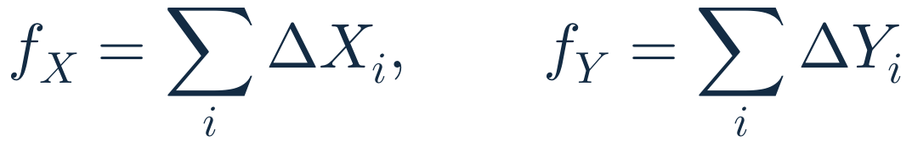
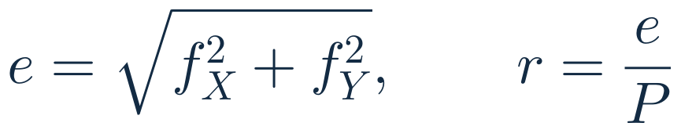
要点
丸め前の値で閉合比を計算し、逆数P／eと区別する。
トラバース測量 I · 改3
40 / 44
補足 / 教員用 付録・次回の先取り
許容判定を済ませてから補正する
「閉じるように直した」だけでは成果を保証できない。
① 角閉合差が許容内なら、角を調整
② 方向角と成分を求め、座標閉合差を点検
③ 座標も許容内なら補正し、座標を確定
要点
許容超過は原因確認・再測。補正で過失を隠さない。
トラバース測量 I · 改3
41 / 44
補足 / 教員用 付録・次回の先取り
Bowditch：辺長に比例して配る
辺長比で配る仕組みを、見やすい別例で確かめる。
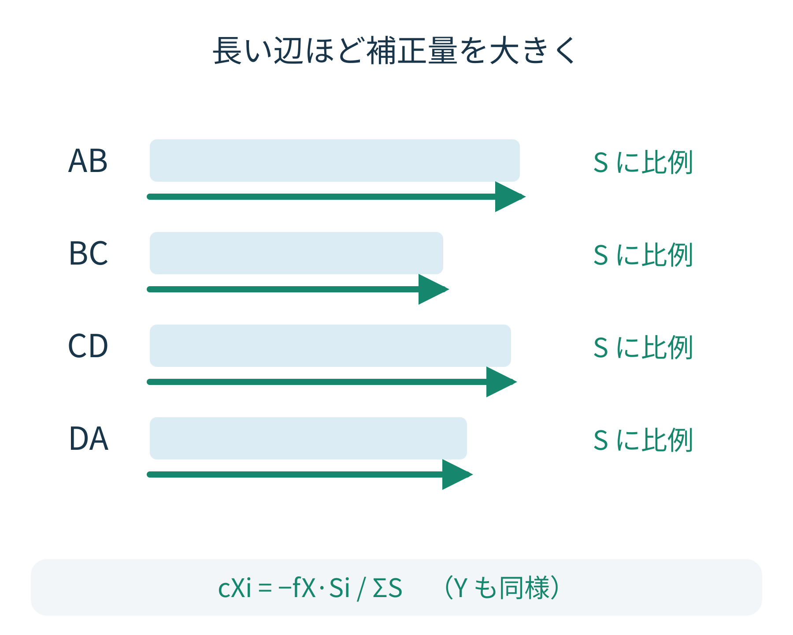
配分専用の別例：P＝400 m、fX＝＋
0.030 m
fY＝−0.040 m、120 mの辺は全長の30%
補正：vX＝−0.009 m、vY＝＋0.012 m
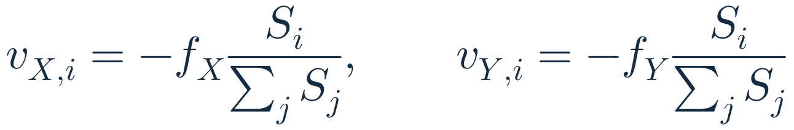
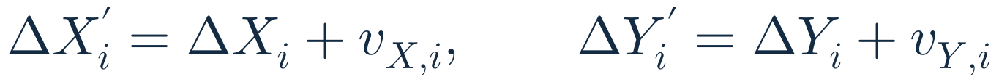
要点
角の等配分と違い、成分の補正は辺長で重み付けする。
トラバース測量 I · 改3
42 / 44
補足 / 教員用 付録・次回の先取り
補正後は、成分の和と座標で検算
講義4点例題へ戻り、補正後の座標を確かめる。
本例の各成分補正量は0.001 m未満
0.001 m表示は補正前と同じ。内部値で検算する
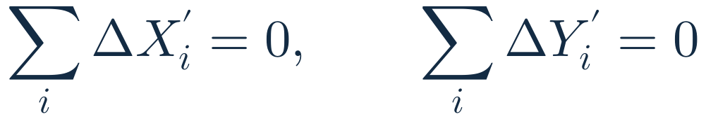
| 点 | 補正後X（m） | 補正後Y（m） |
| A（始点） | 1000.000 | 1000.000 |
| B | 1055.410 | 1106.441 |
| C | 1136.125 | 1056.341 |
| D | 1089.476 | 949.027 |
| A（戻り） | 1000.000 | 1000.000 |
要点
表示の一致だけでなく、内部値の成分和で確かめる。
トラバース測量 I · 改3
43 / 44
補足 / 教員用 付録・出典
出典と、この教材の適用範囲
公式資料で定義と現行規程を確認する。
Xは座標北、Yは東。方向角Tは座標北から時計回り
数値・図は合成教材。イラストはAI生成の概念画
閉合比・Bowditchは第6回への先取り補足
| 公式資料 | 参照内容 |
| 国土地理院「作業規程の準則」 | 点検・許容・基準点測量 |
| 国土地理院「平面直角座標系」 | 座標系と軸の定義 |
| 国土地理院「測量士・測量士補試験」 | 出題形式と計算問題 |
| Esri「トラバースの調整」 | コンパス調整の考え方と前提 |
要点
授業の仮定と、実務で適用する規程を区別する。
トラバース測量 I · 改3
44 / 44